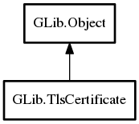

TlsCertificate
Object Hierarchy:

Description:
public class TlsCertificate :
Object
A certificate used for TLS authentication and encryption.
This can represent either a certificate only (eg, the certificate received by a client from a server), or the combination of a
certificate and a private key (which is needed when acting as a
TlsServerConnection).
Content:
Properties:
- public ByteArray certificate { construct; owned get; }
The DER (binary) encoded representation of the certificate.
- public string certificate_pem { construct; owned get; }
The PEM (ASCII) encoded representation of the certificate.
- public TlsCertificate issuer { construct; get; }
A TlsCertificate representing the entity
that issued this certificate.
- public ByteArray private_key { construct; }
The DER (binary) encoded representation of the certificate's private
key, in either PKCS#1 format or unencrypted PKCS#8 format.
- public string private_key_pem { construct; }
The PEM (ASCII) encoded representation of the certificate's private
key in either PKCS#1 format ("`BEGIN RSA PRIVATE KEY`") or unencrypted PKCS#8 format ("`BEGIN PRIVATE KEY`").
Static methods:
Creation methods:
Methods:
- public weak TlsCertificate get_issuer ()
Gets the TlsCertificate representing
this's issuer, if known
- public bool is_same (TlsCertificate cert_two)
Check if two TlsCertificate objects
represent the same certificate.
- public virtual TlsCertificateFlags verify (SocketConnectable? identity, TlsCertificate? trusted_ca)
This verifies this and returns a set
of TlsCertificateFlags indicating any problems found with it.
Inherited Members:
All known members inherited from class GLib.Object